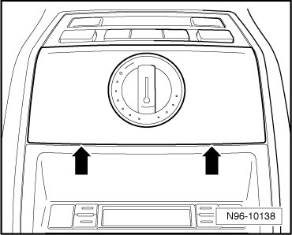
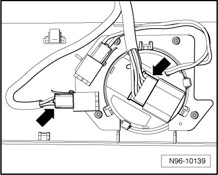
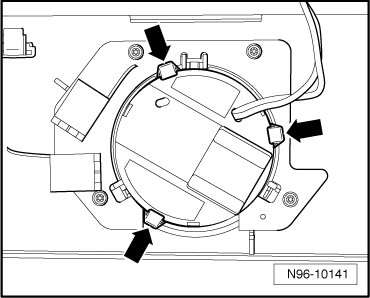
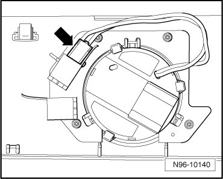

Sunroof Switch
Roof Trim Lamps and Switches
Sunroof Switch
CAUTION!
When removing and installing components in visible area (switches, covers, trim, etc.), cover by taping the areas at which a prying tool (plastic wedge, screwdriver) will be positioned using commercially available adhesive tape.
• Sunroof Switch Lamp (L65) is located beneath Sunroof switch (E8).
Removing
- Switch off ignition, switch off all electrical consumers and remove ignition key.
- Disengage retaining tabs - arrows - and remove Sunroof switch (E8) with trim out of console in molded headliner.

- Disconnect connectors - arrows -.

- Disengage retaining tabs - arrows -.

- Disconnect harness connector - arrow - and remove Sunroof switch (E8) from trim.

Installing
Install in reverse order of removal.